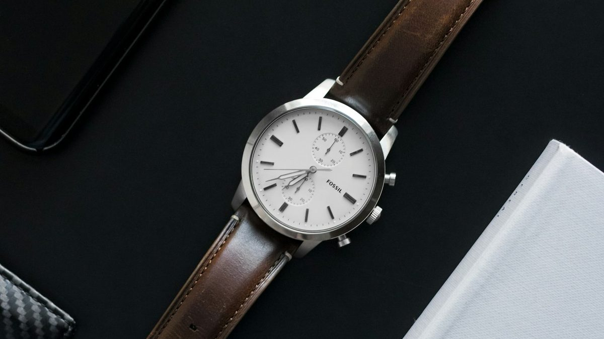

HAY WATCHES · מדריך
איך לבחור את השעון הראשון שלך
שעון ראשון הוא לא רק רכישה, הוא החלטה שמלווה אתכם שנים. המדריך הזה יעביר אתכם בכל השיקולים החשובים, בשפה פשוטה וברורה, כדי שתגיעו עם ביטחון מלא.
שעון ראשון הוא לא רק רכישה, הוא החלטה שמלווה אתכם שנים. המדריך הזה יעביר אתכם בכל השיקולים החשובים, בשפה פשוטה וברורה, כדי שתגיעו עם ביטחון מלא.
לפני שמתאהבים בדגם מסוים, כדאי לקבוע טווח מחירים ריאלי. תקציב ברור לא רק חוסך זמן, הוא גם ממקד את החיפוש לדגמים שבאמת רלוונטיים לכם.
שעוני קוורץ איכותיים ממותגים מוכרים, מצוינים לשימוש יומיומי ולהתנסות ראשונה עם שעון רציני.
טווח שבו נכנסים שעונים אוטומטיים ראשונים ממותגים מבוססים, עם בנייה ואחריות ברמה גבוהה יותר.
שעונים שוויצריים קלאסיים, מכונות פנימיות מתקדמות יותר וגימור יד ברמה גבוהה.
עולם השעונים היוקרתיים והאספנות, כאן נכנסים שיקולים של השקעה, נדירות ומורשת המותג.
המנגנון הוא מה שמניע את השעון, וההבדלים בין הסוגים משפיעים גם על המחיר וגם על אופי השימוש.

תנועת שעון מכני מקרוב, כל שיניים בגלגל השיניים היא חלק ממערכת מדויקת.
מדויק, אמין ודורש תחזוקה מינימלית. פועל על סוללה ומתאים למי שמחפש פשטות ודיוק יומיומי.
נטען מתנועת פרק היד, ללא סוללה. יש בו קסם מכני אמיתי, אך הוא פחות מדויק וזקוק לתחזוקה תקופתית.
דורש דריכה יומית באמצעות הכתר. בחירה למי שמחפש חיבור אינטימי לשעון ולמסורת השעונאות.
הגודל הנכון תלוי בגזרת פרק היד שלכם ובסטייל שאתם מחפשים. כלל אצבע כללי, לא מדעי אך שימושי:
מראה קלאסי ועדין, נאמן למסורת השעונאות הישנה. מתאים לפרקי יד דקים ולסטייל רשמי.
הטווח הפופולרי והבטוח ביותר כיום, מתאים לרוב פרקי היד ולרוב הסטיילים.
נוכחות חזקה על פרק היד, אופייני לשעוני ספורט, טבילה ושעוני כלים.
טיפ: אם אפשר, מדדו את השעון פיזית בחנות, תמונות באינטרנט לא תמיד משקפות איך הוא נראה בפועל על פרק היד.
הרצועה משפיעה על הנוחות היומית ועל האופי הכללי של השעון, ולעיתים ניתן להחליף אותה בהמשך.

רצועת עור מוסיפה חום וגימור אלגנטי, ומתפתחת עם השימוש לאורך זמן.
אלגנטי וקלאסי, מתאים לביגוד רשמי. דורש טיפול והחלפה מדי כמה שנים.
עמידה, נוחה יומיומית, ומתאימה גם לספורט וגם לאירועים.
קלה, עמידה במים וזיעה, אידיאלית לשעוני ספורט וטבילה.
שעון "אחד לכל" הוא לרוב הבחירה החכמה ביותר לרכישה ראשונה. חשבו על סוג השעון שיתאים לשמונים אחוז מהיום שלכם:
קופסה דקה, חוגה נקייה, מתאים לעבודה ולאירועים חברתיים כאחד.
עמידות גבוהה, אטימות למים, מסתדר עם פעילות גופנית ואורח חיים פעיל.
מותג מבוסס מבטיח לא רק איכות בנייה, אלא גם שירות זמין, חלקי חילוף עתידיים ואחריות אמינה. לפני הרכישה שאלו:
שעונים איכותיים מגיעים בדרך כלל עם אחריות של שנתיים ומעלה.
ודאו שקיים שירות מקומי או מיובא זמין למקרה הצורך.
חשוב במיוחד אם אתם מתכננים לשחות, לשטוף ידיים או להתקלח עם השעון.
השעון הראשון שלכם לא צריך להיות מושלם, הוא צריך להיות שלכם. בחרו דגם שמתאים לחיי היום יום שלכם, שנוח על פרק היד, ושבו אתם מתבוננים ומרגישים חיבור. כל השאר, כמו טעם וסטייל, יתפתחו עם הזמן ועם השעון הבא.